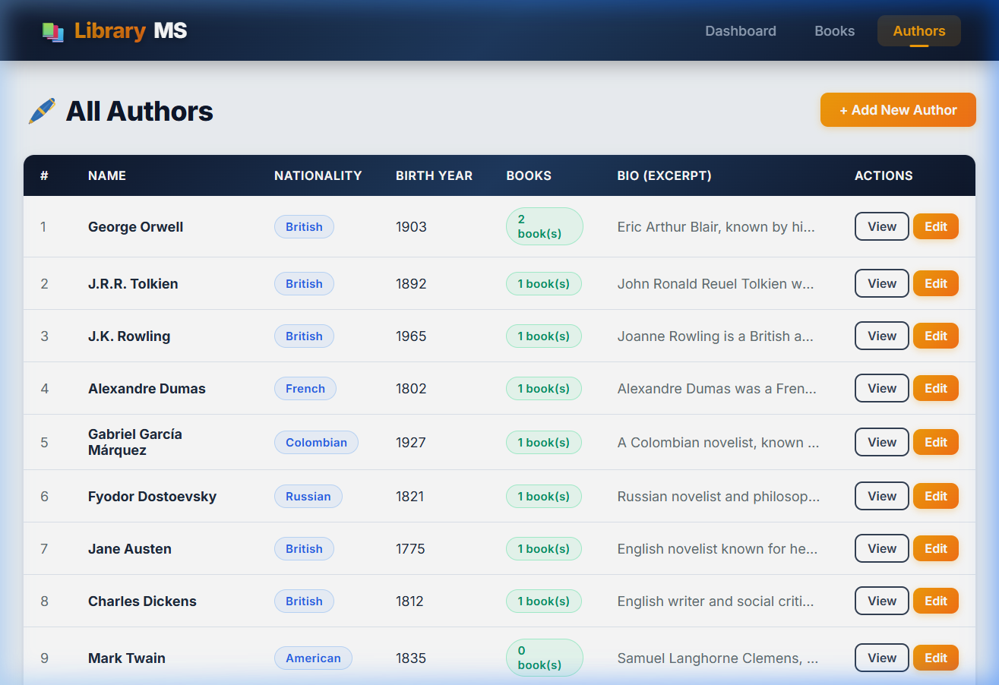
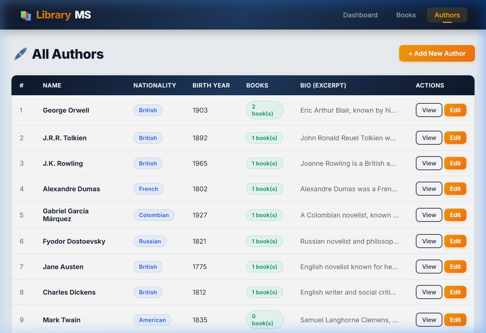
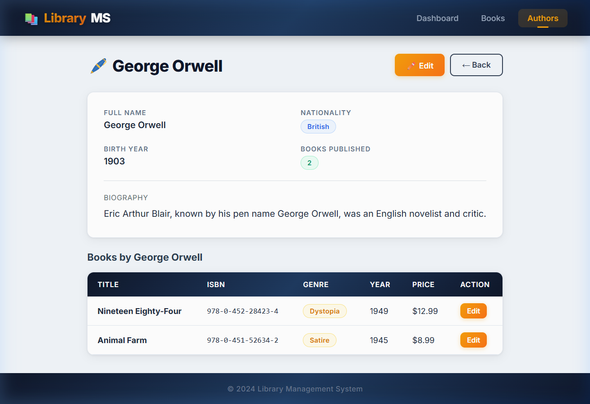
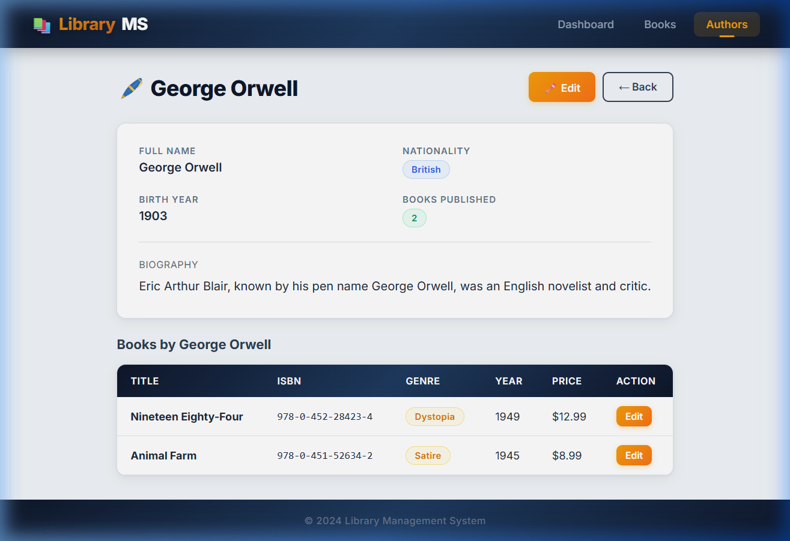
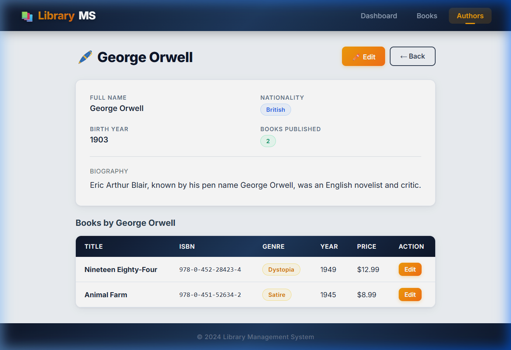
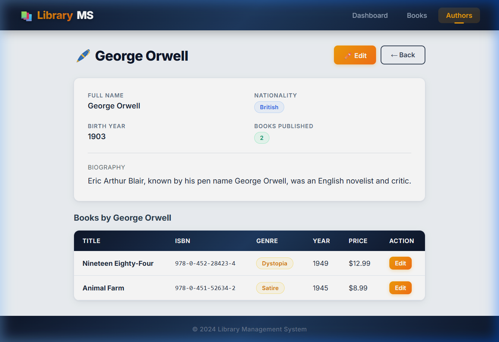

Spring Boot Web Application – Project Report
Vamshi Gurrala
Built with Spring Boot 3.2 · JPA/Hibernate · JSP · H2 Database
This project delivers a full-stack web application that tracks books and their respective authors within a digital library catalogue. Rather than relying on a pre-existing template, every layer of the system—from database schema generation through the browser-rendered views—was hand-crafted to satisfy three core functional requirements: populating the database with seed data, creating and reading entities through web forms, and updating existing records while safeguarding data consistency.
The technology stack centres on Spring Boot 3.2 for dependency injection and auto-configuration, Spring Data JPA backed by Hibernate for object-relational mapping, JSP with JSTL for server-side view rendering, and an embedded H2 in-memory database that keeps setup friction to zero—no external database installation is necessary.
| Capability | How It Works in This App |
|---|---|
| Auto-seeding | A CommandLineRunner inserts 10 authors and 10 books the first time the app boots |
| Create via form | JSP forms with Bean Validation capture new Book / Author records |
| Read (listing) | Inner-join JPQL queries project a DTO that merges Book + Author columns into a single table view |
| Update via form | Pre-populated edit forms let the user modify any field; ISBN uniqueness is re-checked before saving |
| Integrity guards | Duplicate ISBN and duplicate author-name checks throw descriptive exceptions displayed on the form |
Two domain objects sit at the heart of the system: Author and Book. Their association follows a classical one-to-many pattern—a single author may have penned multiple books, yet every book traces back to exactly one author.
| Column | Type | Constraints |
|---|---|---|
| id | BIGINT (PK) | Auto-generated via IDENTITY strategy |
| name | VARCHAR(100) | Not blank, 2–100 chars |
| nationality | VARCHAR(100) | Not blank |
| birth_year | INTEGER | Optional |
| bio | VARCHAR(500) | Optional short biography |
| Column | Type | Constraints |
|---|---|---|
| id | BIGINT (PK) | Auto-generated |
| title | VARCHAR(200) | Not blank, 1–200 chars |
| isbn | VARCHAR(20) | Unique constraint (uk_books_isbn) |
| published_year | INTEGER | Between 1000 and 2100 |
| genre | VARCHAR(50) | Not blank |
| price | DOUBLE | Must be ≥ 0 |
| author_id | BIGINT (FK) | References authors.id, not null |
On the Java side, Author holds a List<Book> annotated with @OneToMany(mappedBy = "author", cascade = CascadeType.ALL), while Book carries a @ManyToOne(fetch = FetchType.LAZY) reference back to its parent. Cascading ensures that when an author record is removed, all associated books are cleaned up automatically.
┌──────────────────────┐ ┌──────────────────────────┐
│ AUTHORS │ │ BOOKS │
├──────────────────────┤ ├──────────────────────────┤
│ id BIGINT PK│──┐ │ id BIGINT PK│
│ name VARCHAR │ │ │ title VARCHAR │
│ nationality VARCHAR │ │ 1..* │ isbn VARCHAR UQ│
│ birth_year INT │ └───────│ author_id BIGINT FK│
│ bio VARCHAR │ │ published_year INT │
└──────────────────────┘ │ genre VARCHAR │
│ price DOUBLE │
└──────────────────────────┘
One Author ─────────────────── Many Books
Rather than shipping SQL scripts, the application seeds itself through a @Configuration class that exposes a CommandLineRunner bean. On every cold start it checks whether the authors table is empty; if so, it persists ten author objects followed by ten book objects, each linked to one of those authors.
@Configuration public class DataInitializer { @Bean CommandLineRunner initDatabase(AuthorRepository authorRepo, BookRepository bookRepo) { return args -> { if (authorRepo.count() > 0) { log.info("Database already seeded – skipping."); return; } Author orwell = authorRepo.save( new Author("George Orwell", "British", 1903, "...")); // ... 9 more authors ... bookRepo.save(new Book("Nineteen Eighty-Four", "978-0-452-28423-4", 1949, "Dystopia", 12.99, orwell)); // ... 9 more books ... }; } }
if (authorRepo.count() > 0) return; prevents duplicate seeding when the app is restarted without clearing the in-memory store—a common scenario during development.Adding a new entity starts in the browser, where a JSP form collects user input. Bean Validation annotations on the entity fields (@NotBlank, @Size, @Min, @Max) are triggered the moment the controller receives the POST request. If validation fails, the controller re-renders the same form with error messages intact so the user can correct mistakes without losing what they typed.
@PostMapping("/save") public String saveBook(@Valid @ModelAttribute("book") Book book, BindingResult bindingResult, Model model, RedirectAttributes redirectAttrs) { if (bindingResult.hasErrors()) { model.addAttribute("authors", authorService.getAllAuthors()); return "books/form"; } try { bookService.saveBook(book); redirectAttrs.addFlashAttribute("successMessage", "Book '" + book.getTitle() + "' added successfully!"); } catch (DataIntegrityViolationException | IllegalArgumentException e) { model.addAttribute("errorMessage", e.getMessage()); model.addAttribute("authors", authorService.getAllAuthors()); return "books/form"; } return "redirect:/books"; }
public Book saveBook(Book book) { // Guard: reject duplicate ISBNs before they hit the DB constraint Optional<Book> clash = bookRepository.findByIsbn(book.getIsbn()); if (clash.isPresent() && !clash.get().getId().equals(book.getId())) throw new DataIntegrityViolationException( "A book with ISBN '" + book.getIsbn() + "' already exists."); // Verify the selected author actually exists in the DB Author author = authorRepository.findById(book.getAuthor().getId()) .orElseThrow(() -> new IllegalArgumentException( "Author not found with id: " + book.getAuthor().getId())); book.setAuthor(author); return bookRepository.save(book); }
The primary listing page does not simply dump every book row independently. Instead, a custom JPQL query performs an INNER JOIN between Book and Author, projecting selected columns into a lightweight BookAuthorDTO. This strategy eliminates the N+1 query trap that would otherwise occur if Hibernate lazily fetched each book's author one at a time.
@Query("SELECT new com.library.entity.BookAuthorDTO(" + "b.id, b.title, b.isbn, b.publishedYear, b.genre, b.price, " + "a.id, a.name, a.nationality) " + "FROM Book b INNER JOIN b.author a " + "ORDER BY a.name, b.title") List<BookAuthorDTO> findAllBooksWithAuthorDetails();
The controller passes this DTO list to the JSP view, which iterates over it using JSTL's <c:forEach> tag to populate an HTML table showing title, author name, nationality, genre, year, and price in a single row.
@Query("SELECT DISTINCT a FROM Author a INNER JOIN a.books b WHERE SIZE(a.books) > 0") List<Author> findAuthorsWithBooks();
Editing reuses the same JSP form as creation. When the user navigates to /books/edit/{id}, the controller fetches the existing record and binds it to the form model so every field arrives pre-filled. Upon submission, the service layer runs a secondary ISBN collision check—this time excluding the book's own ID—before overwriting the managed entity's fields and calling save().
public Book updateBook(Long id, Book updatedBook) { Book existing = bookRepository.findById(id) .orElseThrow(() -> new IllegalArgumentException("Book not found")); // Make sure no OTHER book already owns this ISBN if (bookRepository.existsByIsbnAndIdNot(updatedBook.getIsbn(), id)) throw new DataIntegrityViolationException( "Another book already has ISBN '" + updatedBook.getIsbn() + "'."); existing.setTitle(updatedBook.getTitle()); existing.setIsbn(updatedBook.getIsbn()); existing.setPublishedYear(updatedBook.getPublishedYear()); existing.setGenre(updatedBook.getGenre()); existing.setPrice(updatedBook.getPrice()); existing.setAuthor(authorRepository.findById( updatedBook.getAuthor().getId()).orElseThrow()); return bookRepository.save(existing); }
The following screenshots demonstrate the functional web interface of the Library Management System, featuring a modern dark-navy aesthetic with glassmorphism effects and responsive layouts.

Dashboard with Live Statistics

Interactive Books Catalogue (Inner Join View)

Secure Entity Creation Form

Edit Mode with Pre-filled Data

Authors Directory

Detailed Author Profile & Bibliography
library-app/
├── pom.xml
└── src/
├── main/
│ ├── java/com/library/
│ │ ├── LibraryApplication.java ← Boot entry point
│ │ ├── DataInitializer.java ← Seeds 10+10 rows
│ │ ├── controller/
│ │ │ ├── HomeController.java ← Dashboard stats
│ │ │ ├── BookController.java ← Book CRUD endpoints
│ │ │ └── AuthorController.java ← Author CRUD endpoints
│ │ ├── entity/
│ │ │ ├── Author.java ← JPA entity (parent)
│ │ │ ├── Book.java ← JPA entity (child)
│ │ │ └── BookAuthorDTO.java ← Join-query projection
│ │ ├── repository/
│ │ │ ├── AuthorRepository.java ← JPA + custom JPQL
│ │ │ └── BookRepository.java ← JPA + inner-join queries
│ │ └── service/
│ │ ├── AuthorService.java ← Author business logic
│ │ └── BookService.java ← Book business logic
│ ├── resources/
│ │ └── application.properties ← H2 config, JSP resolver
│ └── webapp/WEB-INF/views/
│ ├── home.jsp ← Dashboard view
│ ├── style.css ← Global stylesheet
│ ├── books/ (list, form, detail)
│ └── authors/ (list, form, detail)
└── test/java/com/library/
├── repository/
│ ├── AuthorRepositoryTest.java ← Slice tests (@DataJpaTest)
│ └── BookRepositoryTest.java
└── service/
├── AuthorServiceTest.java ← Unit tests (Mockito)
└── BookServiceTest.java
The test suite is split into two complementary layers:
Annotated with @DataJpaTest, these tests spin up a minimal Spring context containing only the JPA infrastructure and an embedded H2 instance. They exercise derived query methods and custom JPQL queries against real SQL, catching issues that mocks would silently miss—such as malformed JPQL or incorrect column mappings.
| Test Method | What It Verifies |
|---|---|
| testFindByIsbn | Exact-match lookup by ISBN returns the correct book |
| testFindByGenre | Genre filter returns only books of that category |
| testFindAllBooksWithAuthorDetails | Inner-join DTO contains both Book and Author fields |
| testFindAuthorsWithBooks | Only authors with ≥1 book appear in the result set |
| testExistsByIsbnAndIdNot | Collision-detection query flags duplicate ISBNs correctly |
These use Mockito to isolate business logic from the database. Repository dependencies are replaced with mock objects so each test runs in milliseconds and focuses purely on whether the service enforces its rules—like rejecting duplicate ISBNs or throwing when a referenced author does not exist.
| Test Method | What It Verifies |
|---|---|
| testSaveBook_DuplicateIsbn | DataIntegrityViolationException thrown, save() never called |
| testSaveBook_AuthorNotFound | IllegalArgumentException when author ID is invalid |
| testUpdateBook_Success | All fields updated, save() invoked exactly once |
| testSaveAuthor_DuplicateName | Duplicate name guard fires before persistence |
| testDeleteAuthor_NotFound | Deletion of non-existent record throws rather than silently no-ops |
@Test @DisplayName("getAllBooksWithAuthorDetails returns DTO list from inner-join query") void testGetAllBooksWithAuthorDetails() { BookAuthorDTO dto = new BookAuthorDTO( 10L, "1984", "978-0-452-28423-4", 1949, "Dystopia", 12.99, 1L, "George Orwell", "British"); when(bookRepository.findAllBooksWithAuthorDetails()) .thenReturn(Arrays.asList(dto)); List<BookAuthorDTO> result = bookService.getAllBooksWithAuthorDetails(); assertThat(result).hasSize(1); assertThat(result.get(0).getAuthorName()).isEqualTo("George Orwell"); }
| # | Problem | Root Cause | How I Fixed It |
|---|---|---|---|
| 1 | Maven and JDK were not available on the development machine | Neither mvn nor javac was on the system PATH | Downloaded and configured JDK 17 and Maven 3.9.6 manually, then added both to the user PATH variable |
| 2 | N+1 query issue on the "All Books" page | Hibernate fired a separate SELECT for each book's author because of lazy loading | Wrote a JPQL INNER JOIN query that projects into a flat BookAuthorDTO, fetching everything in one round-trip |
| 3 | Duplicate ISBN inserts caused cryptic database exceptions | The raw ConstraintViolationException from H2 was not user-friendly | Added a pre-save check in BookService.saveBook() that throws a readable DataIntegrityViolationException before the DB is even hit |
| 4 | Edit form overwriting a book's ISBN with another book's ISBN went undetected | The simple findByIsbn check also matched the book being edited itself | Created a custom query existsByIsbnAndIdNot(isbn, id) that excludes the current record from the collision check |
| 5 | PowerShell brace expansion creating literal {entity,repository} folder names | PowerShell does not expand curly braces like Bash does | Removed the malformed directories and created each sub-package folder individually |
Repository URL: https://github.com/vamshigurrala919/library-app.git
Building this library catalogue from scratch reinforced several practical skills: structuring a layered Spring Boot application where each tier (controller → service → repository) has a clearly bounded responsibility; writing JPQL joins that avoid the lazy-loading N+1 trap; applying Bean Validation constraints at the entity level so error feedback is automatic; and designing a test suite that mixes integration slices for query correctness with Mockito-powered unit tests for business logic. The finished product handles all three required operations—populate, create/read, and update—while guarding against duplicate data through explicit pre-save checks.